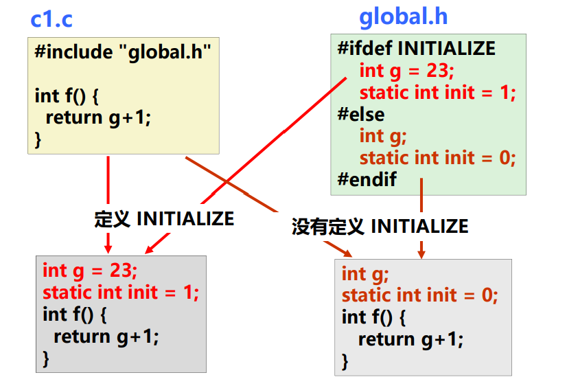

计算机系统层次
本文最后更新于：2023年10月31日 下午
1. 计算机系统层次
软件程序的转换处理过程
- 以C-源程序为例，在GCC+Linux平台中的处理如下：
- （1）首先输入源程序文件hello.c，经过预处理（使用cpp）得到hello.i文件，其仍为源程序。
- （2）对hello.i文件进行编译，得到hello.s文件，其为汇编语言程序。
- （3）将hello.s文件送入汇编器中，得到hello.o文件，其为可重定位目标程序（二进制，包括多条机器指令）。
- （4）在程序中可能还有其它源程序参与，所以需要拿到其它源程序的.o文件，并进行链接，得到可执行目标程序（二进制）。
- 上面介绍为计算机软件层实现的，从高级语言源程序-汇编语言源程序-机器语言目标程序的过程。
- 在计算机硬件层面，有指令译码器对机器语言的二进制指令进行译码，生成对应的控制信号来实现计算机的一些硬件操作。
- 以C-源程序为例，在GCC+Linux平台中的处理如下：
现代计算机系统层次如下图所示。
- 其中语言处理系统包括：
- 各种语言处理程序（如编译、汇编、链接）。
- 运行时的系统：如库函数，调试、优化等功能。
- 其中操作系统包括人机交互界面、提供服务功能的内核例程。
- 其中指令集体系结构（ISA）可以认为是对计算机硬件设计的抽象，而所有的软件功能也都是建立在ISA之上。
- 其中ISA相关的内容可以看这篇博客。
- 计算机硬件需要满足ISA规定的功能。
- 其中语言处理系统包括：
graph TB
A(应用程序) --> B(语言处理系统) --> C(操作系统) --> D(指令集体系结构) --> E(计算机硬件)
2. 可执行文件生成过程详解
2.1 预处理
仍以C-源程序、GCC+Linux平台为例；预处理命令格式如下：
1
2
3$gcc -E a.c -o a.i
# 或直接使用预处理命令：cpp
$cpp a.c > a.i预处理主要完成以下任务
处理源文件中以 “#” 开头的预编译指令，包括：
- 删除 “#define” 并展开所定义的宏。
- 处理所有条件预编译指令，如 “ #if”，“#ifdef”，“#endif” 等。
- 处理源文件中的“#include”，将头文件插入此处；如果头文件中也有#include，可以进行递归处理。
- 添加代码行号和文件名标识，方便编译时编译器产生调试用的行号信息等。
- 保留所有 “#pragma” 编译指令，在后面编译时，编译器需要使用。
经过预处理后，得到的仍是源文件，只是不包含任何宏定义。
举例如下

2.2 编译
对预处理后得到的文件进行词法分析、语法分析、语义分析并优化，生成汇编代码文件。
编译命令格式如下：
1
2
3
4
5$gcc -S a.i -o a.s
# 或直接使用编译命令 cc1
$/users/.../cc1 a.i
# 如果将预处理和编译放在一起进行
$gcc -S a.c -o a.s可以看到无论是预处理、编译还是后面的汇编，都可以使用gcc命令。
- gcc命令实际上是具体程序（如 ccp/cc1/as 等）的包装命令。
- 用户可以使用gcc命令，并加上特定选项来使用特定的程序。
2.3 汇编
汇编指令和机器指令是一一对应的，前者是后者的符号表示，都是机器级指令。
汇编指令格式如下
1
2
3
4
5$gcc -c a.s -o a.o
# 或直接使用汇编命令as
$as a.s -o a.o
# 可以使用下面命令直接完成三步
$gcc -c a.c -o a.o
2.4 链接
链接指令格式如下
1
2
3
4# 其中myproc为链接后生成的可执行文件
$gcc -static -o myproc main.o test.o
# 或直接采用链接命令ld
$ld -static -o myproc main.o test.o链接操作步骤
- （1）确定符号引用关系，代码段符号、数据段符号相互关联起来。
- （2）合并相关的.o文件，将相关的代码段和数据段分别合并在一起。
- （3）在合并后，就可以确定每个符号的地址，如下图的P0,P1,A,B,C等。
- （4）在指令中添入新的地址。
- 第（1）步为符号解析，后面三步称为重定位。
C语言程序举例
- 下图为可重定位目标文件和可执行目标文件之间映射关系。
- 注意：swap()函数中的temp变量为局部变量，其被分配在栈中，不会在过程外被引用，因此不是符号定义。
- 在链接过程中会将相同的节进行合并。并完成符号解析和重定位。
- 图中text节为代码节，data节为已初始化后的数据节，bss为未初始化的全局变量和局部静态变量。还有许多其它未介绍的节，可以网上查阅。
- 注意：bss节中默认初始值为0，因此在磁盘并不需要占实际空间，只需要在节头表中声明此处需要多少长度的内存空间。
- 在写入虚拟内存时，需要为4个节分配存储空间，分别为text，data，bss 和 rodata。
- 节头表包括了每个节的节名、偏移、大小、访问属性、对齐方式等信息。
下图为磁盘中的可执行目标文件和虚拟内存之间的映射关系。
- 其中ELF为Linux下的目标文件格式，后面会进行详细介绍。
- ELF头 包括了文件类型，大端/小端，机器类型，以及程序头表和节头表相关信息（偏移、大小、个数等）。
- 对于可执行目标文件，ELF头需要给字段 e_entry 执行程序时第一条指令的地址。而在可重定位文件中因为并不需要进行执行，所以该字段为0.
- ELF头 包括了文件类型，大端/小端，机器类型，以及程序头表和节头表相关信息（偏移、大小、个数等）。
- 其中程序（段）头表中说明了每个段的属性，包括：可执行目标文件中的节与虚拟地址的映射关系、段的大小、在虚拟空间中的位置、对齐方式以及访问属性等。
- 程序头表中有两个表项为可装入段(即：Type=LOAD)，完成向虚拟空间装入只读代码段以及读写数据段。
- 像前面介绍，在写入虚拟内存时，只需要为4个节分配存储空间。因此下图中可执行目标文件灰色部分的节不需要装入到存储空间。
- 另外，可执行目标文件比可重定位目标文件多了一个.init节，用于定义_init函数，该函数是用来进行执行目标文件时的初始化工作的。
- 其中ELF为Linux下的目标文件格式，后面会进行详细介绍。
- 下图为可重定位目标文件和可执行目标文件之间映射关系。
2.5 目标文件
- 三类目标文件
- 可重定位目标文件 (.o)
- 为汇编之后得到的文件，其代码和数据可以和其它可重定位文件合并为可执行文件。
- 每个.o文件的代码和数据地址都是从0开始。
- 可执行目标文件（Linux默认为a.out，windows中为*.exe）
- 包含代码和数据可以被直接映射到虚拟内存中被执行。
- 代码和数据的地址为虚拟内存空间中的地址。
- 共享的目标文件（Linux中的*.so）
- 特殊的可重定位目标文件，能够在运行时自动被装入到内存中并自动链接到某个存在相关调用的可执行目标文件中。
- 这种是动态的被链接，区别于前面添加多个相关的可重定位目标文件进行的静态链接。
- 更详细的会在后续动态链接处进行介绍。
- 可重定位目标文件 (.o)
- 目标文件格式
- DOS 操作系统：COM格式。
- 仅包含代码和数据，且被加载到内存的固定位置，不采用虚拟地址。
- System V UNIX 早期版本：COFF格式。
- 不仅包含代码和数据，还包含重定位信息、调试信息、符号表等。
- Windows：PE格式，COFF的变种。
- Linux：ELF (Executable and Linkable Format) 格式，COFF的变种。
- DOS 操作系统：COM格式。
3. ELF格式
存在两种视图，包括链接视图(Linkable)和执行视图(Executable)。
链接视图
- 主要展示被链接的情况，按照相同特征划分为不同节。
执行视图
- 主要展示被执行的情况，将具有相同访问属性的节合并成段。
- 前面也有介绍，段的属性被包括在程序（段）头表中。

计算机系统层次
http://binbinqian.cn/2023/10/30/计算机系统层次/